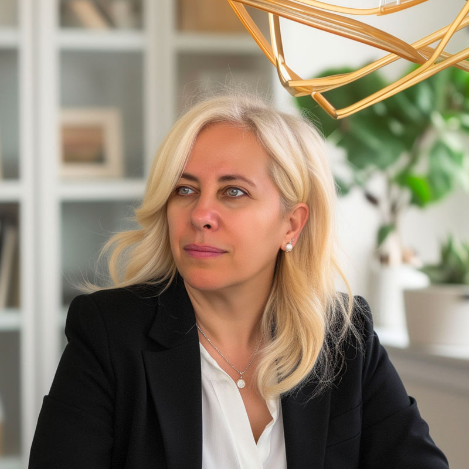

כל חיי עסקתי בעיצוב ובתכנון. תכנון - תרתי משמע.
התחלתי מעולם של מיתוג עסקים, וליוויתי אנשי עסקים מהשלב הראשון - כשהתחילו לעבוד מהפינה הביתית, יצאו למשרד וגדלו עד לעסקים גדולים, מניבים ובקנה מידה בינלאומי.
עמדתי מאחורי חברת Media Design, שפעלה ביבנה בשני מפלסים - קומה של קבלה ומשרדים וקומה נוספת של מעצבות ופינת אירוח, יחד עם סניף נוסף בתל אביב, באבן גבירול.
שני המקומות תוכננו ועוצבו ברמה גבוהה ובהשקעה גדולה, כי תמיד האמנתי שהסביבה שלנו משפיעה עלינו.
"סביבה נאה מרחיבה דעתו של אדם"
כך התייחסתי גם לסטודיו שלי, לעסק שלי וללקוחות שלי.
עיצבתי תערוכות ברחבי העולם, ניהלתי קמפיינים, תקציבים והפקות, והייתי חלק מתהליכים שהפכו רעיון קטן לעסק גדול.
בין הלקוחות - קבלנים, מסעדות, שגרירויות, חנויות אופנה ויהלומים, יישובי ים המלח ויזמים, שעבורם עיצבתי משרדי מכירות, דירות לדוגמה וחשיפה בגני התערוכה לצימרים ובנייה קלה.
הפקתי קמפיינים והפקות אופנה, ובחרתי עבור הלקוחות שלי דוגמניות מובילות כפרזנטוריות, כדי לבלוט ולהיחשף - כמו רותם סלע, סיוון קליין, יעל ניזרי, דנה גרוצקי, מיכל קפטה ועוד.
ליוויתי תהליכים מלאים מול משרדי יח״צ, קיבלתי החלטות גדולות, והייתי שם לאורך כל הדרך.
תמיד עבדתי עם אנשים שמעזים. ותמיד הייתי שם איתם ברגעים של החלטות גדולות.
האמת היא שתמיד הסתכלתי על הכול כ־Win Win, וכל פרויקט היה עבורי תהליך משותף.
גם היום, לקוחות שליוויתי בעולם העסקי, חוזרים אליי כשהם רוצים לבנות, לשפץ, להוסיף, או כשהם ממשיכים לגדול - עבור עצמם או עבור הילדים שלהם.
כל פרויקט מתחיל מהאדם שמולי. מהחלום שלו, ומהמקום שבו הוא נמצא.
זה אף פעם לא היה העתק-הדבק.
לכל אחד יש את הסגנון שלו - מודרני, כפרי, יפני… או משהו שהוא רק שלו.
כדי להגיע לזה, אני נכנסת לעומק. אני עובדת עם שאלון שמאפשר לי להבין את האנשים, את התא המשפחתי, ואת מה שצריך לקרות בבית - היום ובעתיד.
תמיד בשיתוף פעולה, תמיד מתוך סיעור מוחות, ותמיד מתוך הבנה שאין פתרון אחד שמתאים לכולם.
עם השנים הבנתי שמעבר לתכנון, אני צריכה גם את היכולת להוביל תהליך עד הסוף.
עם השנים הבנתי שמעבר לעיצוב, תמיד הסתכלתי על החלל בצורה רחבה יותר - אדריכלית.
עניין אותי איך הדברים בנויים, איך החלל זורם, ואיך אפשר לממש את הפוטנציאל שלו עד הסוף, לא רק מבחינה עיצובית אלא גם תכנונית.
לכן יצאתי ללמוד אדריכלות, כדי לעבוד מול רשויות, להגיש תוכניות ולהבין לעומק את עולם היתרי הבנייה.
הלימודים באדריכלות היו עבורי המשך טבעי, שהעמיק את היכולת שלי להוביל תהליך עד הסוף.
עבודה מול רשויות דורשת דיוק, סבלנות והבנה עמוקה של התב״ע. אין קיצורי דרך. הכול חייב להיות חוקי, מדויק ומוגש נכון.
אני מלווה את הלקוחות שלי לאורך כל הדרך, מסבירה, משתפת, ועובדת איתם בסינרגיה מלאה.
היום אני משלבת חשיבה שיווקית, הבנה עסקית וניסיון עמוק עם אנשים, יחד עם תכנון אדריכלי ועיצוב פנים ברמה גבוהה, כולל ליווי צמוד, פגישות וירידה לפרטים.
אני לא רק מתכננת, מעצבת ומפקחת. אני מבינה מה צריך לקרות בתוך החלל.
בנוסף, אני מביאה איתי גם יכולת יצירה גרפית ואומנותית, שמאפשרת לי לא רק לבחור מה נכנס לחלל - אלא ליצור אותו.
אני יוצרת עבודות מותאמות אישית לכל בית, כאלה שלא קיימות בשום מקום אחר.
היצירות נולדות מתוך החלל עצמו - מתוך החומרים, האור, הפרופורציות והאנשים שחיים בו, והופכות לחלק בלתי נפרד מהבית.
זו לא בחירה של תמונה. זו יצירה שנבנית במיוחד עבור המקום.
זה לא רק מקצוע. זה משהו שחי אצלי מבפנים.
תכנון נכון זה גם לדעת להסתכל קדימה.
תהליכי תכנון והיתרים לוקחים זמן, ובמהלך הזמן משתנים גם הכללים והאפשרויות.
לדוגמה: ממ״ד היום יכול לכלול גם שירותים ומקלחת, יש מושבים שקיבלו תב״ע תיירותית, ובמקומות מסוימים כבר מאשרים בית שלישי - כמו בגאליה.
אני כאן כדי לראות את התמונה המלאה, ולכוון נכון כבר מהשלב הראשון.
ובסוף, זה תמיד חוזר לאנשים.
אני לא עובדת על הרבה פרויקטים במקביל.
כל תהליך אצלי הוא עמוק, מדויק ולוקח זמן - לעיתים גם שנתיים ושלוש.
אני נכנסת לכל פרויקט מתוך מחויבות מלאה, לתהליך, לאנשים ולתוצאה.
הפרויקטים שאני מלווה היום:
בחרנו לא למחוק את העבר - אלא לתת לו מקום, לשפשף, לחדש, לדייק, ולשלב אותו בתוך בית חדש כך שהזיכרון ממשיך לחיות בתוכו.
זה תהליך שמחבר בין זמן, בין תרבויות, ובין אנשים לסיפור שלהם.
אני בוחרת את הפרויקטים שאני נכנסת אליהם, ומתחייבת לכל אחד מהם כאילו הוא היחיד.